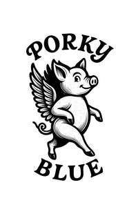

Trade Mark Journal No.2025/044 31 October 2025
UK00004282728 23 October 2025 (9,16,18,25,26,41)

- Class 9
- Audio visual recordings; Music recordings; Downloadable sound recordings; Downloadable music files; Downloadable videos; Downloadable multimedia files; Media content; Downloadable digital photos; Downloadable virtual works of art; Recorded data files; Digital music downloadable from the internet; Audio files in MP3 format; Audio-visual recordings and content provided by downloading and/or streaming from computers and communications networks, including the internet and the world wide web; Downloadable digital files authenticated by non-fungible tokens [NFTs]; Audio tapes; Digital audio tapes; Cassettes; Compact disc; Phonograph records; Data storage devices; Chips containing musical recordings; Headphones; Electronic sheet music, downloadable; Electronic publications; Downloadable publications; Apparatus and instruments, all for recording, transmitting, processing or reproducing of sound, data and images; Mouse mats; Refrigerator magnets; Accessories, parts and fittings in relation to the aforementioned goods.
- Class 16
- Printed matter; Posters; Pictures; Photographs; Art prints; Art etchings; Graphic art reproductions; Graphic prints; Art pictures; Fine art prints; Works of art made of paper; Lithographic works of art; Canvas prints; 3D wall art made of paper; Printed publications; Newsletters; Books; Music books; Song books; Books in relation to lyrics; Books in relation to poetry books; Magazines; Diaries; Journals; Notepads; Brochures; Calendars; Catalogues; Instructional and teaching materials; Stationery; Pens; Pencils; Stationery boxes; Postcards; Stickers [stationery]; Sticker activity books; Greeting cards; Desk mats; Accessories, parts and fittings in relation to the aforementioned goods.
- Class 18
- Bags; Backpacks; Rucksacks; Tote bags; Canvas bags; Duffle bags; Sport bags; Gym bags; Suitcases; Handbags; Clutches; Purses; Cosmetic bags; Toiletry bags; Wallets; Card wallets; Umbrellas and parasols; Leather and imitations of leather; Accessories, parts and fittings in relation to the aforementioned goods.
- Class 25
- Clothing; Footwear; Headgear; Tops; Pullovers; Sweaters; Jackets; Coats; Trousers; Pants; Shorts; Underwear; Hats; Belts; Scarves; Gloves; Bandanas; Wristbands; Face masks (clothing); Parts and fittings in relation to the aforementioned goods.
- Class 26
- Lace, braid and embroidery, and haberdashery ribbons and bows; Embroidered badges; Embroidered emblems; Embroidered patches; Embroidered patches for clothing; Cloth patches for clothing; Ornamental cloth patches; Patches (Textile -) for ironing-on; Heat adhesive patches; Button badges; Badges for wear, not of precious metal; Ornamental bows of textile for decoration; Ornamental novelty buttons; Ornamental novelty badges; Ornamental ribbons made of textiles; Accessories, parts and fittings in relation to the aforementioned goods.
- Class 41
- Entertainment services; Entertainment services provided by performing artists; Musician services; Musical performances; Performances in relation to poetry; Live performances (Presentation of -); Live performances in relation to poetry; Live musical performances; Sound recording and video entertainment services; Writing of texts; Writing of texts in relation to poetry; Music writing; Music composition; Music production services; Production of entertainment; Music concerts; Arranging, conducting and organisation of entertainment, cultural, educational, charitable or recreational events; Arranging and conducting of concerts; Recording of music; Music publishing and music recording services; Production and distribution services in the field of sound and/or visual recordings and entertainment; Recording studio services; Providing digital sound, music and video recordings, not downloadable, from the Internet; Publication of texts; Providing on-line publications (non-downloadable); Electronic library services for the supply of electronic information (including archive information) in the form of electronic texts, audio and/or video information and data, games and amusements; Educational services; Workshops; Training services; Advice, consultancy and information in relation to the aforementioned services.
Porky Blue
Representative: Briffa